Optimización y seguridad para Windows, Android, macOS y Linux. Herramientas simples — Gratis. Código abierto. Para siempre. Herramientas complejas — Pago único. Sin suscripciones. Tuyas para siempre.
Toca una herramienta para ver su plataforma · desliza para ver todas.
🛡️
OptiShield
v1.0.0 · Windows · Gratis
Nuevo
Escudo de privacidad y seguridad: detecta y neutraliza proxyware / botnets (NetNut/Badbox), blinda la telemetría y audita el sistema. Defensivo, reversible y 100% local.
Consola ADB para PC y portátiles: mantenimiento, optimización y control de Android desde el escritorio — casi todo lo que se puede hacer con ADB, con un clic.
El editor de documentos completo para Android: 22 herramientas para PDF, visor de Word/Excel, OCR y firma, más editor Markdown (export a PDF/HTML/.md) y creación de texto libre en cualquier punto. Pago único — 7 días de prueba gratis.
Cualquier persona puede revisar, auditar o contribuir libremente.
📦
Sin instaladores
Ejecutables directos (.exe) o APKs. Descarga y usa.
🚫
Sin telemetría
Ninguna herramienta recopila ni envía datos de usuario.
🆓
Simples = Gratis
Código abierto, sin anuncios, para siempre.
💳
Complejas = Pago único
Sin suscripciones. Pagas una vez, tuya para siempre. $10-15 vs $60-100/año.
Apoya el proyecto
Las herramientas gratis lo son de verdad — sin anuncios ni recopilar tus datos. Si te ayudan, una estrella en GitHub o una pequeña aportación mantienen OptiSuite vivo. 🙌
v1.0.0 — Nuevo OptiShield: escudo de privacidad y seguridad. Detecta y neutraliza proxyware / botnets residenciales (NetNut/Badbox) — ~20 familias + SDK embebido, blinda telemetría y ubicación, y audita arranque, red local (IoT/Badbox) e integridad. Defensivo, reversible y 100% local; nunca toca Defender, Firewall ni UAC. Ver detalles →
Todas las herramientas
Herramientas disponibles
21 herramientas para Windows y Android. Sin anuncios ni telemetría.
OptiSuite Toolkit
v1.0.0 · Windows · ADB
desde $9.99/mes
Consola ADB para PC y portátiles (Windows): hace prácticamente todo lo que se puede hacer con ADB sobre cualquier Android — teléfonos, tablets y más. 18 categorías y +150 acciones: optimización, debloat multi-marca, batería, diagnóstico, red, hardware, seguridad, respaldos, captura, grabación, suite avanzada y privacidad. Suscripción mensual — 10 días de prueba gratis.
Debloat automático por marca (Samsung, Xiaomi, Motorola…)
Diagnóstico de conexión, red (ruta/velocidad/Wi-Fi) y batería
Respaldos, capturas, grabación de pantalla y registro por app
6 funciones gratis · PRO desde $9.99/mes · PRO+ (root) $19.99/mes
Actualizaciones y funciones nuevas incluidas · cancela cuando quieras
$9.99 /mes · 1er mes $4.99
Para PC y portátiles · requiere ADB (Android Platform-Tools)
10 días gratis
OptiFleet
v1.0.0 · Windows · ADB
Nuevo
Controla y visualiza toda tu flota de Android desde el PC: panel profesional por equipo (estilo centro de mando), mosaico con vídeo en vivo de todos a la vez, control y espejado, e informe de salud. Pensado para talleres y granjas de 10+ dispositivos con conexión estable por tiempo prolongado.
Panel por dispositivo: batería, almacenamiento, IMEI e informe de salud
Mosaico en vivo de todos los equipos · elige cuál controlar
Espejado y control · acciones en lote (reiniciar, espejar, etc.)
Control desde el navegador (red local o Internet) · comparte equipos por usuario
Respaldo 1-clic · optimización por equipo · 10 días de prueba
$12.99 · PRO+ $19.99
PRO: control + vídeo · PRO+: + control web remoto, compartir y monitoreo avanzado · requiere ADB
10 días gratis
🛡️
OptiShield
v1.0.0 · Windows · Gratis
Nuevo
Escudo de privacidad y seguridad: detecta y neutraliza proxyware / botnets residenciales (tipo NetNut/Badbox), blinda telemetría y ubicación, y audita arranque, red e integridad. Defensiva, reversible y 100% local — nunca toca Defender, Firewall ni UAC.
Blindaje de privacidad reversible (telemetría, publicidad, ubicación…)
Red local + escaneo profundo + Limpiar TV por ADB (Badbox)
Auditoría de arranque + integridad (hosts, DNS, IOC) + informe
Sin instalar nada · con copias de seguridad · no borra archivos
🌙
OptiReply
Android · Windows · Extensión
Nuevo
Responde solo a tus clientes de Vinted y Wallapop mientras trabajas o duermes. Un bot de auto-respuesta atiende tus chats con tus propios mensajes, al instante y las 24 h — la versión Android funciona sin PC.
Auto-responde en Vinted y Wallapop 24/7
Menú de mensajes propios · respuestas al instante
APK Android: funciona sin PC (servicio en segundo plano)
También en Windows y como extensión Chrome/Brave/Edge
Privado: usa tu propia sesión, sin pedir tu contraseña
8 $ /mes
Android · Windows · Extensión — todo incluido
7 días gratis
OptiCert
v1.0.0 · Windows · Gratis · Open source
Nuevo
Conecta un móvil y obtén en segundos un certificado de confianza: diagnóstico, grado A/B/C/D y PDF firmado con QR. Para vender y comprar móviles usados con garantía.
Salud de batería, IMEI (Luhn + blacklist) y FRP/iCloud
Pruebas funcionales, cámara en vivo y test térmico
Certificado PDF firmado (Ed25519) + QR de verificación
Export a marketplaces · 100% local, sin telemetría
OptiGSM
v1.0.0 · Windows · PRO · Suscripción mensual
Estable
Suite profesional todo-en-uno para servicio técnico Android: ADB, Samsung, MTK, Qualcomm, FRP bypass, Test Hardware, Espejo del dispositivo, Co-Pilot con IA local y CRM integrado.
Todo lo de v1 + 13 módulos nuevos + Co-Pilot 16 preguntas rápidas
OptiDocs
v1.0.0 · Windows · Gratis · IA 100% local
Nuevo
Tu asistente de IA 100% local: chatea con tus documentos (con citas), programa, navega internet y optimiza tu PC y móviles. Sin nube, sin telemetría.
IA propia integrada (Qwen) · también LM Studio/Ollama
Chat con PDF, Word, código… con citas y página
Memoria que aprende · internet · OCR · voz
Diagnóstico y optimización de PC y Android (ADB)
OptiGrab
v1.0.0 · Windows + Android · Gratis
Nuevo
Descarga vídeo y audio de YouTube, TikTok, Instagram, X, Facebook, Vimeo y +1000 webs. Privado, local y sin anuncios.
Vídeo MP4 hasta 4K o audio MP3/M4A/WAV/AAC
Descarga múltiple y carga de listas de enlaces
Alta velocidad (fragmentos en paralelo) · cola con progreso
Sin anuncios ni telemetría · 100% en tu equipo
NeuralMix Pro
v1.0 · Windows · Gratis · Open source
Nuevo
Mezclador de DJ con IA, 100% local. El flujo de un software de DJ profesional, pero con un Co-Pilot que entiende tu música (armonía, BPM, energía) y te sugiere qué pinchar y cómo mezclarlo. Gratis y privado.
Hasta 4 decks · waveform a color · jog wheels · SYNC
Key Lock (cambia el tempo sin alterar el tono) · EQ/Kill/Filtro · FX
Faders por stem (voz/batería/bajo) con IA · acapella al instante
100% local · sin nube, sin telemetría, sin suscripción
🔎
OptiTrace
v1.0.0 · Windows · Gratis · Open source
Nuevo
Investigación de fuentes abiertas (OSINT): reúne información pública sobre un usuario, correo, dominio, IP, teléfono o imagen y la muestra en una lista clara o un mapa de conexiones. Para antifraude, due diligence, RRHH y protección de marca.
Cuentas por usuario y correo en miles de sitios
Dominio, IP, teléfono y EXIF/GPS de imágenes
Mapa de conexiones pivotable · informe exportable
100% local y privado · solo fuentes públicas y legales
OptiPlay
v1.0.0 · Android 8+ · Gratis
Nuevo
Reproductor multimedia rápido, privado y completo para música y vídeo. Sin anuncios, sin telemetría y sin permiso de Internet: tus datos nunca salen del teléfono.
Audio en segundo plano · cola · velocidad · ecualizador de 10 bandas
Vídeo a pantalla completa con gestos · subtítulos · Picture-in-Picture
Listas, favoritos, recientes y más reproducidas (todo local)
Material You · temas claro / oscuro / AMOLED · temporizador de apagado
Privacidad absoluta: sin anuncios, sin rastreo, sin cuentas
Gratis
100% gratuito · sin compras · código abierto auditable
Android 8+
🖥️
WinOptimizer
v2.3.1
Windows
Monitor de rendimiento completo. Muestra RAM física, virtual, caché, CPU, disco y red en tiempo real. Gestor de inicio de Windows integrado.
Monitor RAM, CPU, disco y red en tiempo real
Gestor de inicio de Windows con recomendaciones
Top 5 procesos por uso de RAM con opción Kill
Historial gráfico de 2 minutos
Bandeja del sistema + auto-optimización programada
🔒
SecuritySuite
v1.0.3
Nuevo
Suite de seguridad y privacidad. Desactiva la telemetría de Microsoft, audita programas de inicio, limpia rastros digitales y gestiona reglas de Firewall.
7 servicios de telemetría + 9 tareas programadas
Auditor de inicio con clasificación por riesgo
Limpiador de 8 categorías con vista previa de tamaño
Gestor de Firewall (bloqueo por aplicación)
Puntuación de seguridad 0-100 en tiempo real
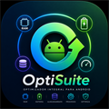
PhoneOptimizer
v1.6.0 · Android · Gratis
Android
Optimizador integral para Android: mantiene RAM, CPU y temperatura en óptimo rendimiento en tiempo real, con mantenimiento automático periódico. 100% gratis, sin anuncios ni telemetría.
Monitor en tiempo real: RAM, CPU, temperatura, batería
Mantenimiento automático periódico en segundo plano
Protección térmica: optimiza al detectar sobrecalentamiento
Libera RAM, detiene procesos y limpia caché · sin root
🔋
BatteryGuard
v1.0.2
Android
Análisis real de salud de la batería. Detecta aplicaciones que drenan energía en segundo plano y optimiza el consumo del dispositivo.
Salud real de la batería en porcentaje
Ranking de apps por consumo energético
Estimación de tiempo restante
Sin root requerido
💾
StorageCleaner
v1.0.2
Android
Analizador de almacenamiento por categoría. Muestra qué está ocupando espacio y permite limpiar caché con un toque. Sin sorpresas.
Mapa de uso de almacenamiento por categoría
Limpieza de caché de todas las apps
Detección de archivos grandes y duplicados
Sin root requerido
📡
NetworkGuard
v1.0.0
Android
Monitor de tráfico de red por aplicación en tiempo real. Detecta qué apps están transfiriendo datos y cuánto. Sin root, sin VPN local.
Tráfico en tiempo real por aplicación
Descarga + subida separados por app
Historial de consumo por sesión
Sin root · Android 8+
🔒
AndroidSecurity
v1.1.0
Android
Auditoría completa de seguridad y privacidad para Android. Sin root, sin internet, 100% local. Detecta amenazas reales, monitorea cámara/micrófono en tiempo real y analiza anomalías del dispositivo.
Auditor de permisos — cero falsos positivos en apps del sistema
Detector de espías — combinaciones peligrosas con descripción en español
Guard en tiempo real — cámara y micrófono LIBRE / EN USO
Anomalías — root, USB debug, VPN, certificados CA, notif listeners
Mi Huella Digital — puntuación de privacidad personalizada
📋
OptiSuite PDF
v1.5.1 · Gratis
Android
Editor PDF completo para Android. Toca el texto para editarlo, arrastra firmas e imágenes sobre la página, notas redimensionables, resaltado inteligente. Sin anuncios, código base público.
Editor directo: texto, firma e imagen directamente sobre el PDF
Notas redimensionables · resaltado detecta líneas de texto reales
Guardar como nuevo archivo o sobrescribir el original
Sin anuncios · sin trackers · código base público en GitHub
OptiSuite Office PRO+
v1.0.2
$9.99
El editor de documentos completo para Android, con identidad propia: edición PDF, visor de Word/Excel, OCR y firma, más el editor Markdown y la creación de texto libre. Pago único, sin suscripciones, sin anuncios.
22 herramientas: edición PDF, visor Word (DOCX)/Excel (XLSX), OCR y firma
Editor Markdown con vista previa en vivo y exportación a PDF, HTML y .md
Texto libre: crea texto nuevo en cualquier punto, muévelo, ajústalo y edítalo
Interfaz premium diferenciada · 7 días de prueba gratis (sin tarjeta)
100% local · sin anuncios ni telemetría · código privado
La consola ADB definitiva para PC y portátiles: hace prácticamente todo lo que se puede hacer con ADB sobre cualquier Android — mantenimiento, optimización, diagnóstico, respaldos y herramientas avanzadas — desde una interfaz fluida y profesional.
✓ 10 días de prueba gratis18 categorías · +150 accionesSin anuncios · sin telemetríaCódigo privado y protegido
Interfaz principal · detección de dispositivos en vivo · consola de resultados
Qué incluye
🚀 Optimización y rendimiento
Debloat automático por marca (Samsung, Xiaomi, Motorola…), animaciones, AOT/dexopt, Doze y Mantenimiento completo en un clic.
📡 Red e Internet
Diagnóstico por capas, reparación de "Wi-Fi sin internet", DNS seguro, trazado de ruta, prueba de velocidad, escaneo de redes cercanas y control de datos/APN.
🔋 Hardware y energía
Informe completo de salud de batería, estado térmico, sensores, CPU, IMEI e información completa del equipo.
🩺 Diagnóstico
Diagnóstico de conexión guiado, registro (log) en vivo y por aplicación, crashes/ANR, informe del sistema y grabación de pantalla.
🛡️ Seguridad y permisos
Detección de gestión corporativa y perfiles administrados, control granular de permisos por app, usuarios/perfiles y estado de cifrado y arranque.
💾 Respaldos y archivos
Copia de fotos/vídeos y memoria interna, transferencia de archivos, limpieza de caché por app y capturas al PC.
🔓 Suite avanzada (PRO+)
Optimización extrema, control de CPU, herramientas de recuperación avanzada, limpieza profunda, borrado seguro y OptiMirror (control de pantalla).
OptiMirror
Controla la pantalla desde el PC — incluso varios equipos a la vez
Visualiza y maneja tu Android desde el ordenador con un motor de espejado integrado (no necesitas instalar nada extra). Si conectas varios dispositivos, elige cuáles y se abre una ventana de control por cada uno.
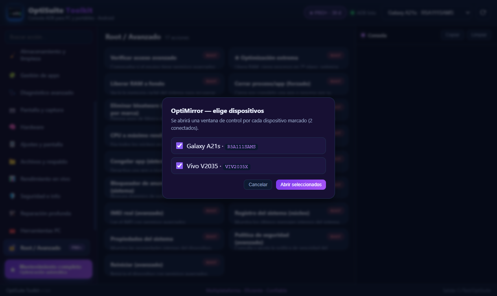
Una experiencia que evoluciona con tu plan
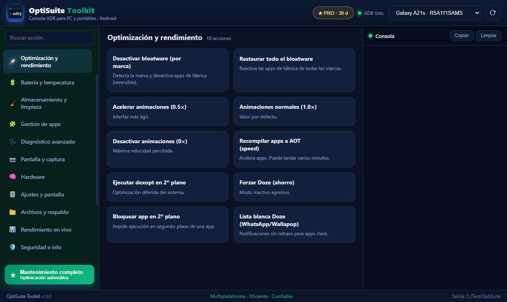
PRO · tema esmeralda
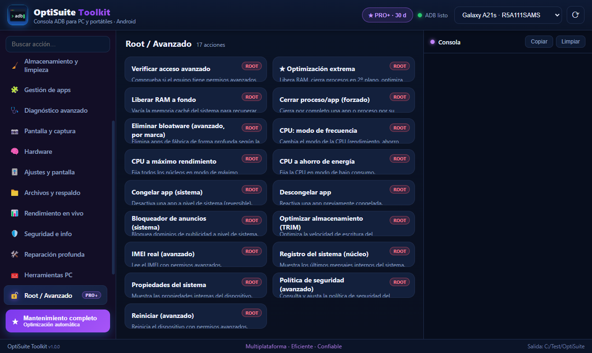
PRO+ · suite avanzada, tema violeta
Planes
Gratis
$0
6 funciones básicas siempre disponibles + 10 días de prueba con todo desbloqueado.
PRO
$9.99 /mes
1er mes $4.99
Todas las herramientas estándar (+100 acciones), Mantenimiento completo y actualizaciones incluidas.
PRO+
$19.99 /mes
1er mes $9.99
Todo lo de PRO + suite avanzada (root), control de CPU, borrado seguro y OptiMirror.
Cancela cuando quieras · licencia vinculada a tu equipo · requiere ADB (Android Platform-Tools). PRO+ se activa con tu clave: contáctanos en support@optisuite.app.
Prueba OptiSuite Toolkit gratis durante 10 días
Sin tarjeta para la prueba. Descárgalo y empieza a optimizar.
v1.0.0 · Windows 10/11 · ADB · Centro de mando de flotas
Tu centro de mando para decenas de dispositivos Android a la vez: visualízalos en un mosaico en vivo, controla cualquiera con un clic y revisa la salud de cada equipo desde un panel profesional. Diseñado para talleres y granjas de dispositivos con sesiones de larga duración.
Nuevo✓ 10 días de pruebaVídeo en vivo · 10+ dispositivosCódigo privado y protegido
Panel por dispositivo · información en vivo · informe de salud
Qué incluye
🗂️ Mosaico en vivo
Todos tus equipos en una rejilla que se actualiza en tiempo real. Elige cuál controlar con un clic.
📊 Panel por dispositivo
Batería (salud, ciclos, temperatura), almacenamiento, identidad e IMEI, con informe de verificación.
🖥️ Ventana de espejo + control
Abre cada equipo en su propia ventana, estilo emulador: vídeo en vivo fluido de la pantalla a un lado y una barra de botones al otro (encender, inicio, atrás, volumen, rotar…). Toca y desliza para controlarlo. Abre varios a la vez.
⚙️ Acciones en lote
Reinicia, espeja o gestiona varios equipos seleccionados de una sola vez.
🔋 Modo bajo consumo
Optimizado para mantener muchos equipos conectados durante sesiones largas sin saturar el PC.
🔒 Privado y seguro
Licencia vinculada a tu equipo. Sin anuncios ni telemetría. Tus datos no salen de tu PC.
🌐 Control desde el navegador
Abre y maneja tus teléfonos desde el navegador de cualquier dispositivo de tu red —o desde Internet— con vídeo en vivo y baja latencia.
👥 Compartir por usuario
Crea enlaces de acceso para una persona o grupo: cada uno solo ve y controla los equipos que le asignes. Con caducidad por horas o días y revocación al instante.
💾 Respaldo 1-clic
Copia fotos, vídeos y archivos de tus equipos a tu PC con un clic. Protege la información ante un restablecimiento de fábrica.
🧹 Optimización por equipo
Desactiva apps innecesarias y deja cada teléfono con solo las herramientas que usa. Reversible y en lote.
📦 Instala APK y XAPK
Instala apps en uno o varios equipos a la vez, incluyendo apps divididas (XAPK), con avisos claros si algo falla.
🔁 Reconexión automática
Si se va la luz o se reinicia el PC, OptiFleet recuerda tus equipos y los vuelve a conectar solo. Sin reconectar uno por uno.
🔌 Mantener despierto
Pantalla apagada pero el sistema y la conexión siguen vivos: menos calor y menos consumo, y los equipos siguen respondiendo.
➕ Añade equipos de cualquier red
Conecta teléfonos de tu red local o de fuera (por Internet, con una VPN privada o reenvío de puerto). Quedan recordados.
🔒 Seguridad y auditoría
Audita la postura de cada equipo (root, cuentas, opciones de desarrollador) y aplica refuerzo reversible. En equipos con root, bloquea el restablecimiento de fábrica (factory reset) y oculta opciones de desarrollador para reducir la manipulación.
Mosaico en vivo
Toda tu flota en una sola pantalla
Conecta tus dispositivos y velos todos a la vez, en vivo. Selecciona uno o varios para controlarlos, reiniciarlos o espejarlos. Ideal para talleres y pruebas en múltiples modelos.
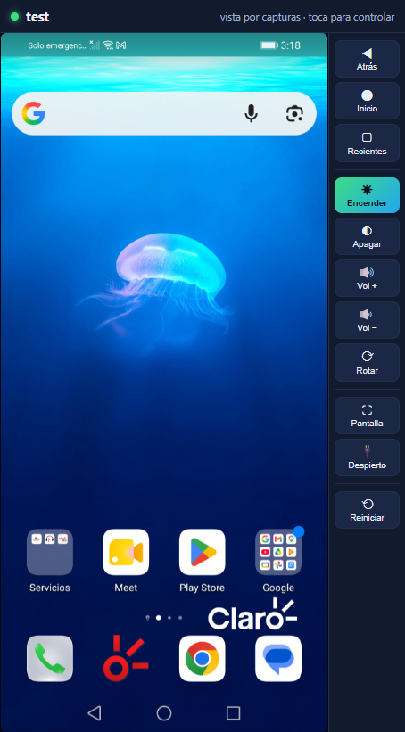
Espejo + control por equipo
Como un emulador, pero con tus teléfonos reales
Abre cada equipo en su propia ventana: la pantalla del teléfono y, al lado, una barra de herramientas a mano (encender/apagar, inicio, atrás, recientes, volumen, rotar, pantalla completa). Tócala o deslízala para controlar el equipo. Si el vídeo en vivo no está disponible, sigue mostrando la pantalla por capturas para que nunca te quedes a ciegas.
Control desde el navegador
Controla tus teléfonos desde donde estés
Abre tus equipos en el navegador de cualquier dispositivo —tu otro móvil, una tablet o un PC— con vídeo en vivo. En tu red local funciona al instante; para llegar desde Internet solo necesitas un túnel seguro. Aquí tienes un ejemplo real con ngrok:
En OptiFleet abre la pestaña Apoyo y activa el Control web.
En tu red (Wi-Fi): pulsa “Abrir control web” o copia el enlace y ábrelo en otro dispositivo de la misma red.
Desde Internet: crea una cuenta gratuita en ngrok, instálalo y conéctalo con tu token; luego ejecuta ngrok http 8770. Te dará una dirección https pública.
Pega esa dirección https en OptiFleet (campo “Dirección pública”). A partir de ahí, los enlaces que compartas funcionan desde cualquier lugar.
Comparte por usuario: crea un enlace para cada persona o grupo con los equipos que le asignes y, si quieres, con caducidad por horas o días.
La dirección https es necesaria para el vídeo fluido en el navegador. En tu red local, el control funciona también sin túnel.
Otras opciones de servidor (elige la que prefieras)
🟣 ngrok
El más rápido para empezar. Cuenta gratuita.
ngrok http 8770
Te da una dirección https lista para pegar en OptiFleet.
🟠 Cloudflare Tunnel
Gratis y sin abrir puertos del router.
cloudflared tunnel --url http://localhost:8770
Devuelve una dirección https de Cloudflare.
🔵 Tailscale (VPN privada)
Lo más privado: no expone nada a Internet público.
http://100.x.x.x:8770
Instala Tailscale en el PC y en tu dispositivo y entra por su IP privada.
🟢 LocalTunnel
Alternativa simple y gratuita.
lt --port 8770
Devuelve una dirección pública para pegar en OptiFleet.
En todos los casos el paso final es el mismo: copia la dirección que te da el servicio y pégala en OptiFleet → Apoyo → Dirección pública. Para tu red local no necesitas nada de esto. Recomendado para Internet: una dirección https (ngrok/Cloudflare) o una VPN privada (Tailscale).
Precio
Prueba
10 días
Todo desbloqueado para que pruebes tu flota completa, sin tarjeta.
PRO
$12.99
licencia por equipo
Control completo, mosaico con vídeo en vivo, espejado y acciones en lote. Actualizaciones incluidas.
PRO+
$19.99
licencia por equipo
Todo lo de PRO + control desde el navegador (incluido acceso remoto por Internet), compartir equipos por usuario con caducidad, respaldo 1-clic, optimización por equipo, monitoreo avanzado continuo (temperatura, salud y ciclos de batería, avisos de batería baja), automatización (macros), modo ahorro y API local + webhooks para integrar tu flota con tus sistemas.
v1.0.0 · Windows 10/11 · Gratis · Código abierto por transparencia
Escudo de privacidad y seguridad para tu PC. Detecta y neutraliza proxyware y participación en botnets residenciales (tipo NetNut / Badbox), blinda la telemetría y la ubicación, y audita el arranque, la red y la integridad del sistema. Defensiva, reversible y 100% local (no envía tus datos a ningún servidor) y nunca debilita tu seguridad: no toca Windows Defender, Firewall ni UAC — solo informa de su estado.
Nuevo✓ 100% gratisReversible · con copias de seguridadNo toca Defender/Firewall/UAC
Descomprime y abre OptiShield.exe — no instala nada. Acepta el aviso de administrador para poder aplicar cambios; sin admin funciona en modo solo-lectura (analiza pero no cambia).
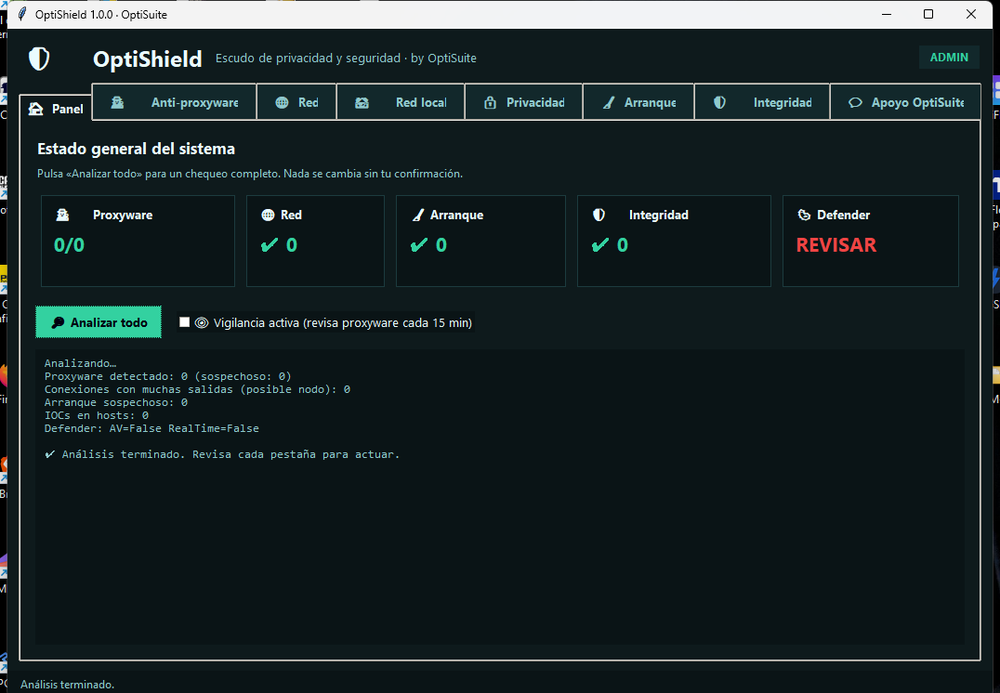
Panel con semáforo general (proxyware, red, arranque, integridad, Defender) y «Analizar todo» en una pasada. Nada se cambia sin tu confirmación.
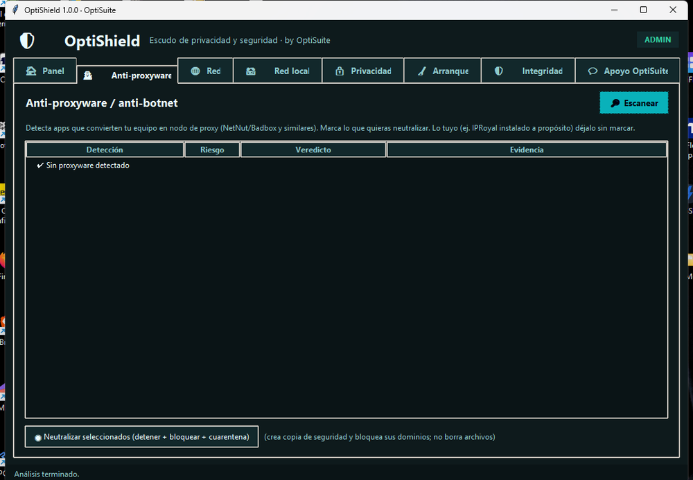
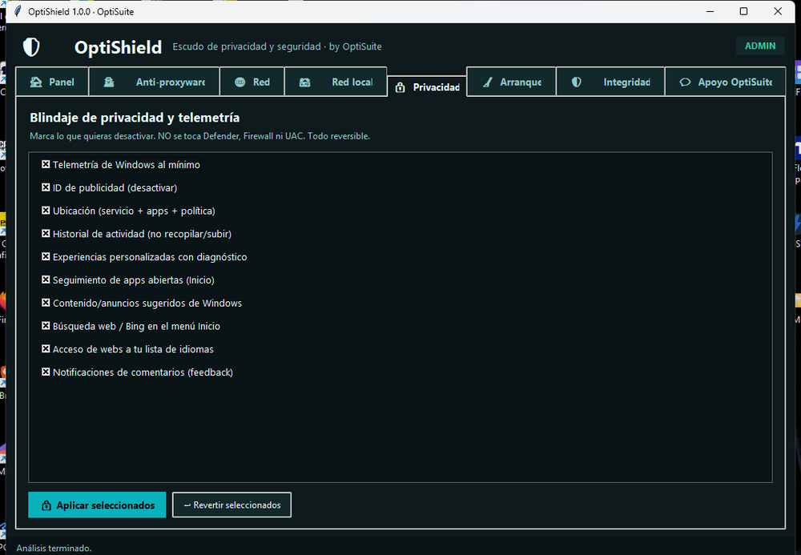
Izq.: Anti-proxyware / anti-botnet — marca lo que quieras neutralizar (detiene, bloquea dominios y crea regla de firewall; no borra archivos). Der.: blindaje de privacidad con casillas reversibles.
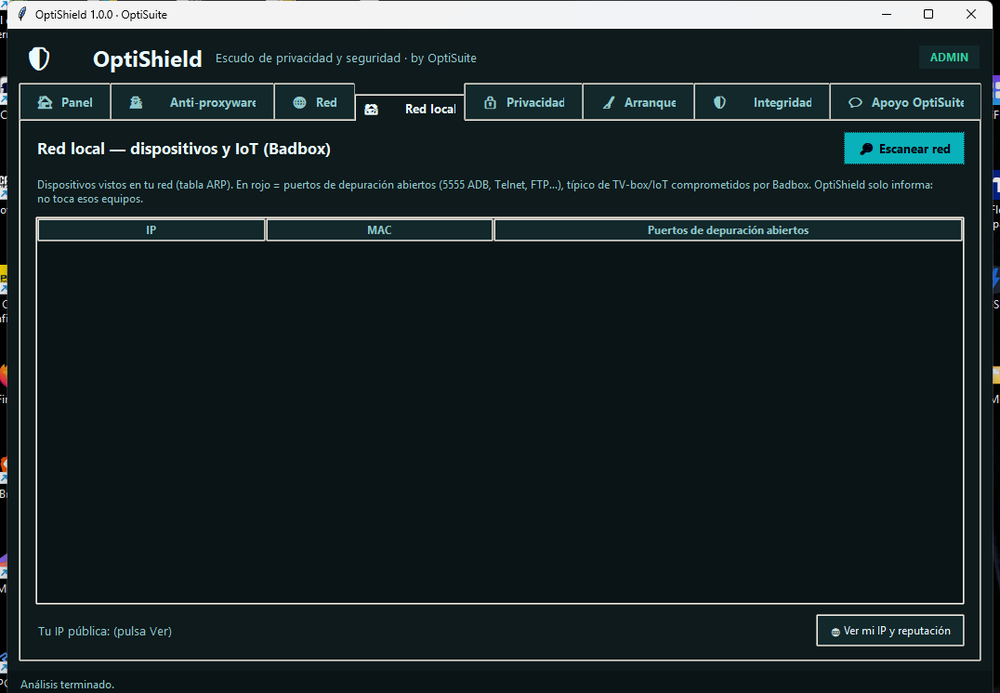
Qué incluye
🏠 Panel
Semáforo general del sistema y «Analizar todo» en una sola pasada.
🕵️ Anti-proxyware
Detecta ~20 familias (Honeygain, IPRoyal Pawns, EarnApp/Bright Data, Peer2Profit, Traffmonetizer, Hola VPN…) por proceso, servicio, carpeta y registro. Sonda SOCKS5 y detecta SDK embebido en navegadores/apps. Neutraliza lo que marques (reversible).
🌐 Red · inteligencia de conexiones
Conexiones activas y a qué organización se conecta cada programa (por DNS inverso, sin enviar nada a terceros). Marca en rojo lo que parece proxy / residencial o con muchas salidas.
🏘️ Red local (Badbox)
Escaneo rápido (ARP) o profundo: barrido activo de toda tu subred + fabricante por MAC. Sondea puertos de depuración (5555 ADB, Telnet, FTP…) típicos de TV-box/IoT comprometidos. Marca IP/MAC de confianza (tus equipos ya no salen en rojo) y muestra nombre y por qué un puerto está abierto. Reputación de tu IP pública. Solo informa.
📺 Limpiar TV (nuevo)
Conecta tu TV/TV-box Android por USB o red (ADB), lista sus apps, marca las sideload/sospechosas (típicas de Badbox) y te deja desactivarlas o desinstalarlas — con tu aprobación. Cierra la depuración al terminar. Requiere platform-tools (ADB).
🔒 Privacidad
Desactiva/revierte telemetría, ID de publicidad, ubicación, historial de actividad, contenido/anuncios sugeridos, búsqueda web en Inicio… Todo con copia de seguridad previa.
🧹 Arranque
Programas y tareas que arrancan con Windows; marca en rojo lo sospechoso (Temp, comandos ofuscados) y en ámbar lo obsoleto (huérfano: apunta a algo ya desinstalado). Limpia o elimina lo que no sirva — reversible.
🛡️ Integridad
Proxy del sistema, DNS, archivo hosts y dominios IOC. Quita bloqueos y reglas de firewall de OptiShield. Exporta informe.
👁️ Vigilancia continua
Casilla opcional que cada 15 min revisa si arranca proxyware y te avisa (mientras la app está abierta).
Alcance honesto — por qué NO usamos kernel/driver ni MITM
Un fallo en un driver es un pantallazo azul, no un simple cierre de app; y un driver sin firmar exige "Modo de prueba" que debilita tu seguridad (justo lo contrario a nuestro principio). Un driver firmado con un bug se vuelve arma para atacantes (BYOVD).
Ver el tráfico cifrado obligaría a instalar una CA raíz y hacer MITM de tu conexión = espiarte a ti mismo. En su lugar, la pestaña Red identifica la organización de cada destino por DNS inverso, sin tocar tu tráfico.
La limpieza del TV usa el protocolo oficial ADB (no un implante). Si el malware está en el firmware de fábrica (típico de Badbox en TV-box baratos), una app no lo quita: haría falta reflashear o retirar el equipo.
El escaneo profundo solo barre tu propia subred (/24). «Neutralizar» no borra archivos (detiene, deshabilita, bloquea dominios y regla de firewall) y todo es reversible desde %ProgramData%\OptiShield.
🆚 OptiShield vs. antivirus — se complementan
No compiten. El antivirus caza malware conocido en tiempo real; OptiShield cubre lo que el antivirus deja pasar a propósito: proxyware/PUA (Honeygain y similares "son legales"), telemetría/privacidad y nodos residenciales — con transparencia y control manual (ves y apruebas cada cambio) y reversibilidad. Recomendación: Windows Defender ENCENDIDO + OptiShield. Por eso OptiShield nunca toca Defender. (Los .exe de PyInstaller pueden dar falso positivo en algún antivirus; el código fuente está en GitHub por transparencia.)
Gratis — si te ayuda, apóyalo 🙌
OptiShield es gratis, sin anuncios y sin recopilar tus datos. Si te resulta útil, una estrella en GitHub o una pequeña aportación ayudan a mantenerlo y a seguir mejorándolo. ¡Gracias!
Responde solo a tus clientes de Vinted y Wallapop mientras trabajas o duermes. Un bot de auto-respuesta atiende tus chats con tus propios mensajes, al instante y las 24 horas. La versión Android funciona sin PC (servicio en segundo plano sobre tu propia sesión); también tienes app de Windows y extensión de navegador.
Nuevo7 días gratisSin PC (Android)Vinted + Wallapop
El enlace lleva a la carpeta con las 3 versiones. Android: instala el APK (activa "orígenes desconocidos") y listo, sin PC. Windows: instalador o versión portable. Navegador: carga la extensión en Chrome, Brave o Edge.
📱
Android (APK)
Instálalo y listo, sin PC.
💻
Windows (PC)
Instalador o versión portable.
🧩
Chrome / Brave / Edge
Extensión del navegador.
Así se ve
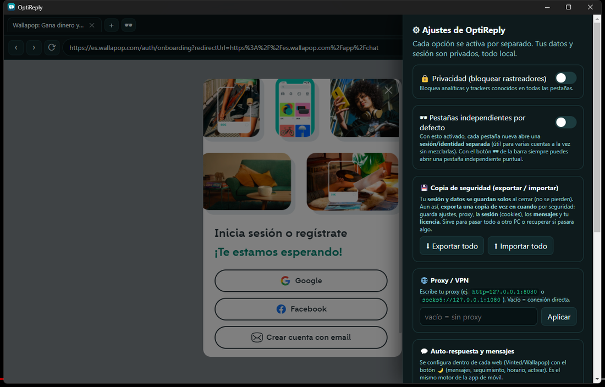
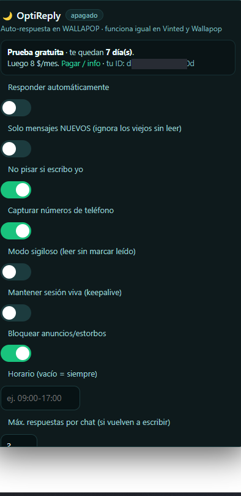
Un navegador propio con Vinted y Wallapop integrados. A la izquierda, sus ajustes (privacidad, copia de seguridad, proxy — todo en tu equipo); a la derecha, el menú de auto-respuesta: responder solo a mensajes nuevos, no pisar si escribes tú, horario, modo sigiloso y tope por chat.
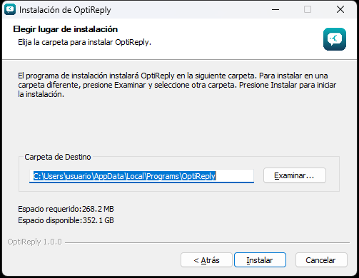
Instalación en 2 clics
En Windows: ejecuta OptiReply-Setup.exe, elige «Solo para mí» y pulsa Instalar — sin permisos de administrador. ¿Prefieres no instalar? Usa la versión portable (descomprime y abre OptiReply.exe). En Android, un simple APK.
Qué hace
🌙 Responde por ti 24/7
Atiende a tus clientes al instante mientras trabajas, sales o duermes.
💬 Tus propios mensajes
Defines tu menú de respuestas y el bot contesta con ellas; tú mandas.
📱 Sin PC (Android)
La app Android trae su propio navegador y bot integrados; corre en segundo plano.
🛒 Vinted y Wallapop
Pensado para vendedores en ambas plataformas de segunda mano.
🔒 Usa tu sesión
Trabaja sobre tu cuenta ya iniciada; no te pide ni guarda tu contraseña.
🔕 Menos distracciones
Se centra en tus chats de venta para que no pierdas ningún cliente.
v1.0.0 · Windows 10/11 · PRO · Suscripción mensual
La suite todo-en-uno para técnicos de reparación de móviles Android. Una sola aplicación para todas tus reparaciones Android. Compatible con Samsung, MTK, Qualcomm y cualquier Android via ADB, incluyendo tablets y TV Box.
v2.0.1 · Windows 10/11 · PRO · Suscripción mensual
La versión avanzada de OptiGSM: todo lo de v1 más Tickets CRM completo, análisis de Energía / Térmico, tests de Estabilidad CPU/RAM, Analítica del taller, Firmware Tools, RF/WiFi y Co-Pilot expandido a 13 áreas.
v2.0.1 NuevoTickets CRMEnergía / TérmicoTests CPU/RAMCo-Pilot 13 áreas
Conecta un móvil y obtén en segundos un certificado de confianza para venderlo o comprarlo con garantía: diagnóstico completo, grado A/B/C/D y un PDF firmado con QR de verificación. Pensado para tiendas y para la compraventa entre particulares. Da seguridad al comprador y diferencia tu venta.
Nuevo✓ 100% gratisCertificado firmado (Ed25519)Sin anuncios ni telemetría
Tu asistente de inteligencia artificial 100% local. Carga tus PDFs, Word, código o notas y pregúntale en lenguaje natural: responde citando el documento y la página exactos. Tiene su propia IA integrada (no depende de servidores externos), navega internet cuando tú quieras, programa, recuerda lo que le enseñas, y diagnostica y optimiza tu PC y tus móviles por ADB. Todo en tu equipo — sin nube, sin telemetría, sin que tus datos salgan.
Windows: descomprime y abre OptiDocs.exe. La IA local (modelo Qwen) se descarga dentro de la app la primera vez. También puede conectarse a LM Studio u Ollama si los prefieres.
Pregunta en lenguaje natural sobre tus documentos: responde citando la fuente y la página exactos. Todo en tu equipo.
Modo programador: genera, repara y optimiza código con modelos Qwen-Coder y bloques copiables.
Qué incluye
🧠 IA local propia
Descarga un modelo (Qwen2.5) una vez y funciona sin servidores externos. O usa LM Studio/Ollama.
📄 Chat con documentos (RAG)
PDF, Word, TXT, Markdown, CSV, código… con citas del documento y la página.
🧩 Memoria que aprende
Dile «recuerda que…» y lo recordará. Todo editable y en local.
🌐 Internet opcional
Busca y lee páginas web reales, citando las fuentes. Lo activas tú con un botón.
💻 Programación
Genera, repara y optimiza código (Qwen-Coder) con bloques y botón de copiar.
🩺 Diagnóstico y optimización
Analiza tu PC (CPU, RAM, discos) y tus móviles Android por ADB, y propone mejoras.
🔌 Gestión de APIs
Llama a cualquier servicio REST con tus claves guardadas en local.
🎙️ Voz y 🖼️ OCR
Lee respuestas en voz alta y dictado por voz · lee el texto de imágenes (OCR local).
🔒 100% privado
Documentos, conversaciones y datos no salen de tu equipo. Sin cuenta, sin anuncios.
💙 Apoya OptiDocs
Es gratis, sin anuncios y sin recopilar tus datos. Si te resulta útil, una pequeña aportación ayuda a mantenerlo y a seguir mejorándolo. ¡Mil gracias! 🙌 Al llegar a 1000 estrellas en GitHub se liberará el código fuente.
Descarga vídeo y audio de YouTube, TikTok, Instagram, X/Twitter, Facebook, Vimeo y +1000 webs. Elige la resolución (hasta 4K) o el formato de audio (MP3/M4A/WAV/AAC) antes de bajar cada uno. Además, busca, reproduce y escucha dentro de la app (en Windows y Android), con recomendaciones, directos, biblioteca e historial. Privado, local y sin anuncios: nada se sube a ningún servidor.
Nuevo✓ 100% gratisDescarga múltiple / listasSin anuncios ni telemetría
Windows: descomprime y abre OptiGrab.exe (incluye yt-dlp y ffmpeg). · Android: instala el APK (activa "orígenes desconocidos"); además busca, reproduce y escucha dentro de la app. Ambas descargan de YouTube, TikTok, Instagram, X, Facebook y +1000 sitios. Descarga solo contenido para el que tengas derecho.
Busca, reproduce y escucha dentro de la app, con recomendaciones. O pega un enlace (o un canal/perfil entero) y descarga. Todo en tu equipo.
Pestaña de descargas: progreso por archivo, y puedes pausar o cancelar cada una — o todas a la vez.
Qué incluye
🎬 Vídeo hasta 4K
Elige la resolución antes de bajar: 360p, 480p, 720p, 1080p, 1440p o 4K, según la fuente.
🎵 Solo audio
Extrae la música en el formato que prefieras: MP3, M4A, WAV o AAC.
▶️ Reproduce antes de bajar
Busca y escucha dentro de la app, con recomendaciones. Cambia la resolución de reproducción.
📑 Páginas y perfiles enteros
Pega un canal o perfil y lista todos sus vídeos para elegir cuáles bajar — sin copiar enlaces uno a uno.
⏸ Cola con pausa y cancelar
Pestaña de descargas con progreso por archivo. Pausa o cancela cada una, o todas a la vez.
📄 Descarga múltiple y listas
Pega varios enlaces o carga un .txt y descárgalos todos a la vez, en vídeo o audio.
⚡ Alta velocidad
Descarga por fragmentos en paralelo (configurable). Cola con progreso, velocidad y ETA.
🌐 +1000 plataformas
YouTube, TikTok, Instagram, X, Facebook, Vimeo, Dailymotion y muchas más.
🔒 100% privado
Todo se procesa en tu equipo. Sin anuncios, sin rastreadores, sin cuenta.
Hecho con dedicación
Parte del ecosistema OptiSuite — herramientas privadas y sin anuncios. Si te resulta útil, puedes apoyar su desarrollo desde la propia app.
💜 Apoya OptiGrab
Es gratis, sin anuncios y sin recopilar tus datos — pero detrás hay muchas horas de trabajo. Si te ahorra tiempo, una pequeña aportación ayuda a mantenerlo y a seguir mejorándolo. ¡Mil gracias! 🙌
v1.0 · Windows 10/11 · Gratis · Código abierto (MIT)
Mezclador de DJ con IA, 100% local. Mantiene el flujo familiar de un software de DJ profesional, pero añade un Co-Pilot que entiende tu música —armonía, BPM, energía y similitud real de audio— y te sugiere qué pinchar y cómo mezclarlo. Todo gratis, privado y auditable: sin nube, sin telemetría, sin suscripción.
Nuevo✓ 100% gratisCódigo abierto · MITSin nube ni telemetría
Software libre y auditable. Se ejecuta desde el código (Node + Electron; npm install y npm start — instrucciones en el README). La inteligencia musical (separación de stems y análisis de BPM/tonalidad) usa un motor Python local opcional. Tu música nunca sale de tu equipo.
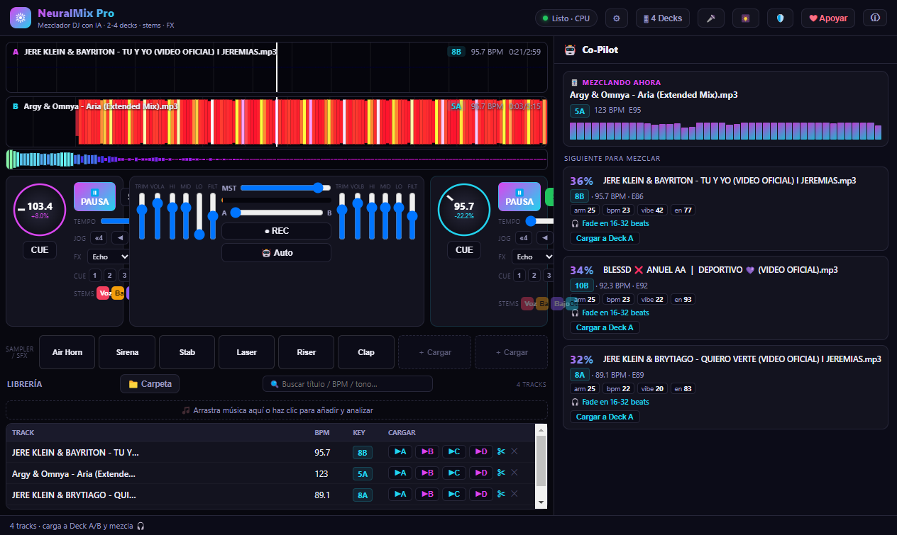
Vista principal: dos decks con waveform a color por frecuencia, jog wheels, EQ/Kill/Filtro, crossfader y el panel del Co-Pilot que analiza tu librería (BPM, tonalidad Camelot y energía).
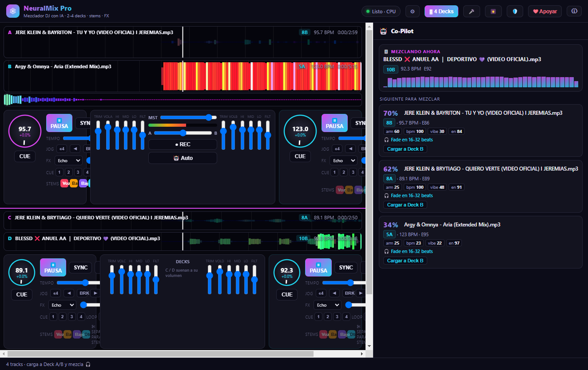
Hasta 4 decks reproduciendo a la vez, cada uno independiente. A/B en el crossfader; C/D a su propio volumen para capas y mashups.
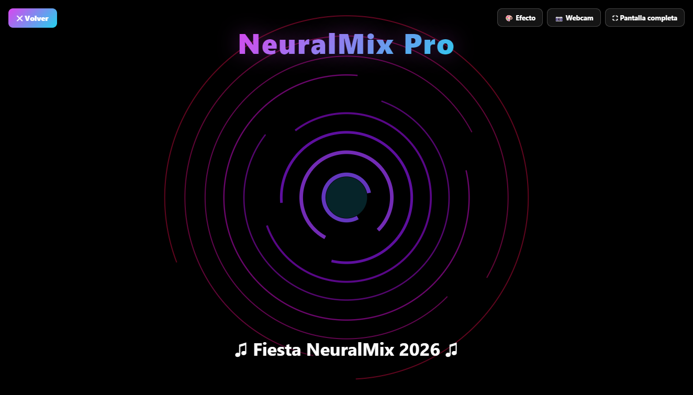
Visualizador reactivo al audio (3 estilos + webcam de fondo) para proyección o streaming, con pantalla completa limpia y texto personalizable.
Qué incluye
🎛 Hasta 4 decks
Waveform a color por frecuencia, jog wheels con BPM, SYNC, pitch bend, beat jump, brake, hot cues y loops.
🎚 Key Lock / Master Tempo
Time-stretch WSOLA: cambia el tempo sin alterar el tono. Verificado: 440 Hz se mantiene a cualquier velocidad.
🎤 Faders por stem (IA)
Separación con Demucs: sube o baja voz, batería, bajo y otros por separado. Acapella o karaoke al instante.
🤖 Co-Pilot IA + AutoMix
Sugerencias de mezcla armónica (rueda Camelot), BPM y energía, con similitud real de audio. AutoMix encadena el set.
🎵 EQ, Kill, Filtro y FX
EQ de 3 bandas + Kill, filtro y trim. Efectos: Echo, Reverb, Flanger, Phaser. Crossfader de potencia constante.
🥁 Sampler / Sound FX
8 pads con sonidos de fábrica (Air Horn, Sirena…) y carga de tus propios samples.
🎆 Visualizador + 🎙 Micro + ⏺ Grabación
Visualizador reactivo con webcam, entrada de micrófono y grabación del set. Atajos de teclado.
🔒 100% local y libre
Multilenguaje (ES/EN), temas de color, modo seguro y respaldo. Sin anuncios, sin cuentas. Código MIT auditable.
⚖️ Honestidad técnica
Pensado para casa, práctica, streaming, bares y DJs móviles. El motor Web Audio tiene una latencia de ~20-50 ms, así que no sustituye una cabina de club profesional (que requiere <5 ms y hardware dedicado). No incluye vídeo, DMX, timecode de vinilo ni streaming de plataformas de pago. Lo que sí: un mezclador local, libre y honesto con la mejor inteligencia musical.
Hecho con dedicación
Parte del ecosistema OptiSuite — herramientas privadas y sin anuncios. Si te resulta útil, puedes apoyar su desarrollo desde la propia app.
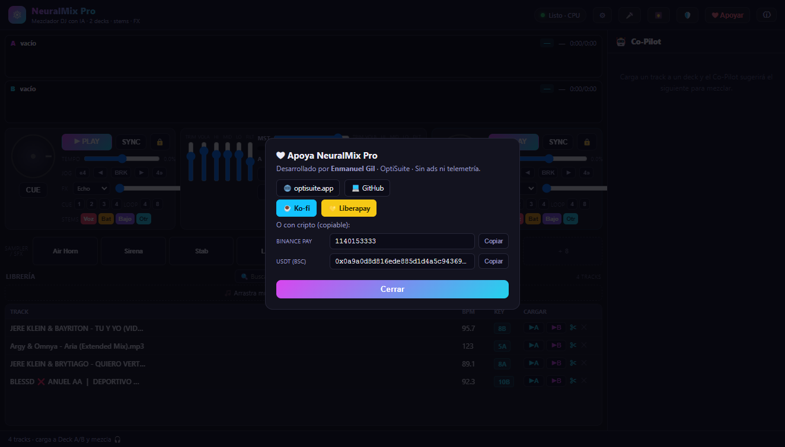
💜 Apoya NeuralMix Pro
Es gratis, de código abierto y sin recopilar tus datos — pero detrás hay muchas horas de trabajo. Si te resulta útil, una pequeña aportación ayuda a mantenerlo y a seguir mejorándolo. ¡Mil gracias! 🙌
v1.0.0 · Android 8+ · Reproductor de música y vídeo · 100% gratis
El reproductor multimedia más rápido, privado y completo para Android. Reproduce tu música y tus vídeos con una experiencia premium y cero recolección de datos: sin anuncios, sin telemetría y sin permiso de Internet.
Nuevo✓ 100% gratisSin permiso de InternetMúsica + Vídeo
Inicio · Reproduciendo · Ecualizador · Privacidad y marca
Qué incluye
🎧 Audio premium
Reproducción en segundo plano con notificación y controles, cola, velocidad (0.5–2×), aleatorio y repetición.
🎬 Vídeo universal
Pantalla completa con gestos (brillo, volumen, avance), ajuste de pantalla, subtítulos, pista de audio y Picture-in-Picture.
🎚️ Ecualizador
Ecualizador gráfico de varias bandas con presets, refuerzo de graves y sonido envolvente.
📂 Biblioteca completa
Canciones, álbumes, artistas, carpetas y vídeos, con búsqueda y orden instantáneos.
⭐ Listas y favoritos
Crea listas de reproducción, marca favoritos y revisa recientes y más reproducidas. Todo guardado en el teléfono.
🎨 Material You
Temas claro, oscuro y AMOLED, con colores dinámicos extraídos de tu fondo de pantalla. Temporizador de apagado.
🔒 Privacidad absoluta
No declara el permiso de Internet: es incapaz de enviar tus datos. Sin anuncios, sin rastreo, sin cuentas.
Privacidad real, no promesas
La app que no puede espiarte
OptiPlay no incluye el permiso de Internet en su manifiesto, así que técnicamente no puede enviar tu información a ningún servidor. No hay anuncios, ni analítica, ni cuentas. Tu biblioteca, tus listas y tu historial se quedan en tu teléfono. Código abierto y auditable.
Precio
Gratis
100% gratuito y sin compras dentro de la app. Para siempre.
Tu música y tus vídeos, como deben ser
Rápido, privado y gratis. Descárgalo e instálalo en segundos.
El editor de documentos definitivo para Android: edita PDF, Word y Excel, firma, convierte y aplica OCR — y además, exclusivo de PRO+, un editor Markdown con vista previa en vivo y creación de texto libre en cualquier punto del documento. Todo 100% local.
✓ 7 días de prueba · sin tarjeta22 herramientas100% local · sin anuncios
El editor de documentos completo para Android: 22 herramientas PDF, visor de Word/Excel, OCR y firma, más editor Markdown y texto libre. Pago único — sin suscripciones, sin anuncios. 7 días de prueba gratis.
$9.99 pago único7 días gratis · sin tarjeta
En desarrollo para Android
🎯
FocusSuite
Pomodoro · App Timer · Uso diario
🌐
TranslateSuite
Traducción de documentos · Multi-idioma
Historial de cambios
Actualizaciones
Registro completo de versiones y cambios en todas las herramientas.
Junio 2026v2.0.1NuevoOptiGSM · Windows
OptiGSM v2.0.1 — Suite avanzada de reparación con CRM y diagnóstico profundo
Actualización mayor: gestión completa del taller, análisis de energía y tests de estabilidad verificados con dispositivo real.
✨Tickets CRM: crear, editar (clic en fila), imprimir, presupuestos y garantías
✨Energía / Térmico: consumo por app, wake locks, predicción de batería y drenaje anormal
✨Test de estabilidad CPU/RAM: muestreo paralelo real con avgCpu%, maxTemp y duración
✨Co-Pilot expandido: 13 áreas de conocimiento + 16 preguntas rápidas
✨Activación por suscripción mensual con clave Ed25519 offline
🔧Código privado · ZIP portable 178 MB listo para distribuir
Junio 2026v1.0.2MejoraPRO & PRO+ · Android
OptiSuite Office PRO y PRO+ v1.0.2 — Edición de texto mejorada
Editor de texto del documento más preciso: el reemplazo queda ceñido a su celda sin afectar el contenido cercano, ahora puedes cambiar el color del texto y el tamaño del reemplazo coincide con el original. Además, los documentos de Word (DOCX) ya pueden editarse, no solo verse.
Junio 2026v1.0.1NuevoPRO+ · Android
OptiSuite Office PRO+ v1.0.1 — Nuevo producto
La versión avanzada de OptiSuite Office, con identidad propia. Pago único — 7 días de prueba gratuita.
✨Editor Markdown con vista previa en vivo y exportación a PDF, HTML y .md
✨Texto libre: crea texto nuevo en cualquier punto, muévelo, ajústalo y edítalo
✨Interfaz premium diferenciada · incluye todo lo de PRO (22 herramientas)
✨Pago único, sin suscripciones, sin anuncios, sin telemetría · código privado
Junio 2026v1.0.1ActualizaciónPRO · Android
OptiSuite Office PRO v1.0.1
Suite profesional de PDF y oficina para Android. Pago único $12.99 — 7 días de prueba gratuita, sin suscripciones, sin anuncios.
✨21 herramientas PDF · visor Word (DOCX)/Excel (XLSX) · OCR · firma a mano
✨Editor de texto: edita el existente o crea texto nuevo; guarda de forma fiable en Descargas
✨Edición sobre imágenes · botón de información en cada herramienta
✨5 herramientas básicas gratis · resto con licencia · 100% local, sin internet
🔧APK firmado · obfuscación R8 · código privado
Jun 2026v1.5.1RebrandAndroid
OptiSuite PDF v1.5.1 — Rebrand + APK firmado
Rebrand completo a OptiSuite PDF. Nuevo paquete com.opti.pdf, APK firmado. Solucionado error de instalación "paquete no válido".
✨Notas (ANNOTATE) redimensionables con handle inferior-derecho
✨Resaltado detecta líneas de texto reales, ignora áreas imagen
✨Diálogo de guardado: Sobrescribir o Guardar como [nombre]
✨Comprimir muestra % de reducción + ruta en Descargas/OptiSuitePDF/
🔧Solucionado error de instalación "paquete no válido" — APK estaba sin firmar
Jun 2026v1.0.0NuevoAndroid
OptiSuite PDF v1.0.0 — Lanzamiento completo
Suite PDF completa para Android. 11 herramientas: combina, divide, comprime, rota, firma, escanea y rellena formularios. Sin anuncios ni trackers. Nombre original: PDFSuite.
✨Lector con zoom, navegación y modo oscuro
✨Historial de recientes y favoritos persistentes
✨Apertura directa desde gestor de archivos (intent VIEW)
✨Herramientas en v1.1: combinar, dividir, comprimir, rotar
Jun 2026v2.3.1FixWindows
WinOptimizer — Corrección de error NULL al iniciar
Corregido el error "No se puede llamar a un método en una expresión con valor NULL" que aparecía al abrir la aplicación.
🔧$stTimer movido a scope de script para garantizar acceso desde el handler asíncrono del DispatcherTimer
🔧Handler Add_Loaded completamente protegido con bloques try/catch independientes
Jun 2026v1.0.3FixWindows
SecuritySuite — Rendimiento mejorado
Inicio y comandos mucho más rápidos: 16 queries WMI individuales reemplazados por 2 queries batch en caché.
⚡Cache batch: 2 queries en lugar de 16 al cargar y ejecutar acciones
⚡Toggles individuales actualizan caché en tiempo real
⚡Puntuación de seguridad instantánea (cache hit)
Jun 2026v1.0.2FixWindows
SecuritySuite — Inicio rápido
La ventana ahora aparece de inmediato al abrir. Los datos se cargan en segundo plano tras mostrar la interfaz.
✓Inicialización diferida al evento ContentRendered: ventana visible de inmediato
✓Eliminado bloqueo síncrono previo al ShowDialog que causaba la demora
Jun 2026v1.0.2FixWindows
SecuritySuite — Corrección lista de telemetría
Corrección del bug visual que mostraba la lista de servicios y tareas de telemetría vacía. Icono de aplicación rediseñado.
✓Lista de servicios de telemetría ahora muestra los 7 servicios correctamente
✓Lista de tareas programadas ahora visible con botones funcionales
✓Icono rediseñado: escudo con candado sobre fondo oscuro
Jun 2026v1.0.0NuevoWindows
SecuritySuite — Lanzamiento inicial
Suite de seguridad y privacidad para Windows. Combina 4 herramientas en una: control de telemetría, auditor de inicio, limpieza de rastros y gestión de Firewall.
✨Módulo de telemetría: 7 servicios + 9 tareas programadas de Microsoft
✨Auditor de inicio con clasificación automática por riesgo (Alto/Medio/Bajo)
✨Limpiador de 8 categorías con análisis de tamaño previo
✨Gestor de Firewall: bloquear/desbloquear apps al acceso a Internet
✨Puntuación de seguridad 0-100 calculada en tiempo real
Jun 2026v2.3.0MejoraWindows
WinOptimizer — Gestor de inicio integrado
✨Gestor de inicio de Windows directamente en la GUI — sin abrir el Administrador de tareas
✨Recomendaciones automáticas por categoría para cada entrada de inicio
🔧Eliminado acceso externo al Administrador de tareas
Jun 2026v2.2.1FixWindows
WinOptimizer — Correcciones críticas de inicialización
🔧Función On() con null-check para todos los eventos WPF
🔧Wrappers SafeText y SafeBar en toda la UI
🔧Operadores de comparación corregidos (espacios requeridos en PS 5.1)
Jun 2026v2.2.0MejoraWindows
WinOptimizer — Temperatura CPU, Kill process, Auto-optimización
✨Temperatura de CPU en tiempo real
✨Botón Kill en Top 5 procesos por RAM
✨Auto-optimización programada cada 5/15/30 minutos
Explorar por categoría
Categorías
Las herramientas organizadas por tipo de función. Cada suite combina funciones relacionadas en una sola app.
⚡
Rendimiento del sistema
WinOptimizer · PhoneOptimizer
RAM · CPU · disco · red · procesos
🔒
Seguridad y privacidad
SecuritySuite · AndroidSecurity
Telemetría · permisos · firewall
🔋
Batería y energía
BatteryGuard
Salud · consumo · optimización
💾
Almacenamiento
StorageCleaner · FileSuite
Análisis · limpieza · duplicados
🌐
Red y conectividad
NetworkGuard · NetworkSuite
Tráfico · WiFi · DNS · scanner
🔧
Diagnóstico de hardware
SystemDiag Pronto
CPU · RAM · SMART · temperatura
🎯
Productividad
FocusSuite Pronto
Pomodoro · timer · uso diario
🛡️
Seguridad Android
AndroidSecurity Pronto
Permisos · APK · cámara/mic guard
El proyecto
Sobre OptiSuite
Por qué existe, qué lo diferencia y cómo se desarrolla.
Un problema real
Las apps de "optimización" del mercado suelen venir con publicidad invasiva, trackers ocultos, o directamente son malware disfrazado. Las que son legítimas te cobran por funciones básicas o te obligan a crear una cuenta.
OptiSuite nació de la necesidad de tener herramientas que simplemente funcionen: sin anuncios, sin trackers, sin servidores a los que conectarse, sin cuenta que crear. El modelo es simple: herramientas básicas son gratis y abiertas. Herramientas avanzadas tienen un precio único justo — pagas una vez, usas para siempre. Sin suscripciones, sin sorpresas.
Cada herramienta está construida para resolver un problema real que las alternativas del mercado resuelven mal o no resuelven sin cobrarte.
🆓
Herramientas simples = Gratis
Código abierto total. Cualquier persona puede revisar, auditar o contribuir. Sin anuncios, sin telemetría, para siempre.
💳
Herramientas complejas = Pago único
Sin suscripciones, sin anuncios. $10-15 vs $60-100/año de la competencia. Pagas una vez y la herramienta es tuya para siempre.
📦
Sin instaladores complejos
Ejecutables directos (.exe) o APKs. Descargas y usas. Sin asistentes que instalen cosas extra.
🚫
Sin telemetría ni ads
Ninguna herramienta recopila datos. Ni en la versión gratuita ni en la de pago. Sin trackers, sin servicios de terceros.
🤖
Desarrollado con IA
Asistencia de inteligencia artificial en el proceso de desarrollo, para mayor calidad y menos errores.
Desarrollador
Enmanuel Gil
Desarrollador independiente
Construyo herramientas de optimización y seguridad con el apoyo de inteligencia artificial. Básicas: gratis y código abierto. Accesibles: pago único justo. Profesionales avanzadas: suscripción mensual con actualizaciones incluidas. Siempre sin anuncios y sin telemetría — porque el software ético no debería ser la excepción.
¿Encontraste un bug o necesitas ayuda? Escríbenos por correo a support@optisuite.app, o abre un Issue en GitHub para las herramientas de código abierto.